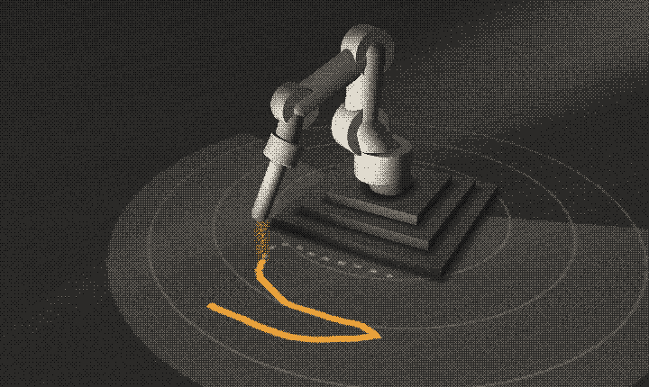

Mechanical engineer · robotics, mechatronics, nuclear
Jaime
López Ruiz
■ Final-year MEng at Imperial College London, available from July 2027
Now showing The cochlea as a megastructure. The bright thread is an electrode array going in: my final-year project at the Hamlyn Centre. Research sheet →
Now showing Markerless teleoperation. My arm on a webcam, the SO-101 following it. Hover for the raw frame. Code sheet →
Now showing Where, Not How. The SO-101 tracing held-out recorded paths with my own IK; the light ground is its reach. Code sheet →
Now showing The hot fire, 24 May 2025. Liquid bipropellant rocket; I led the feed system and structure. Mech sheet →
Selected work
Sheets are marked Code, Mech or Research- 01Cochlear implant insertionWIPFinal-year project at the Hamlyn Centre: autonomous insertion from bipolar impedance sensing.2026–27Research
- 02Markerless teleoperationAn SO-101 arm driven from a single webcam.2026Code
- 03Precision motor assemblyPerkinElmer: a friction-drive axis, its error budget and its control.2025–26Mech
- 04Where, Not HowHuman demonstrations as object-path commands; residual RL in MuJoCo.2026Code
- 05Liquid bipropellant rocketFeed system and body structure; two hot fires.2025Mech
- 06Irradiated SiC, OxfordA Raman campaign on ion-irradiated SiC and the analysis pipeline behind it.2025Research